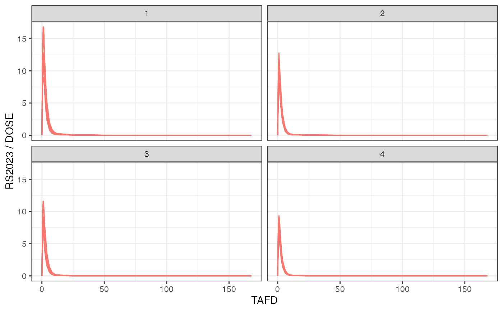

Calculate quantiles for a column's values across all subjects. Each subject gets the same n-tile value across all their rows. The input column must have exactly one distinct value per subject (e.g., age, weight, baseline values).
Value
A nif object with a new column containing the n-tile values (1 to n),
named either x_NTILE (default) or the custom name specified in
ntile_name
See also
dplyr::ntile() for the underlying n-tile calculation
Examples
library(dplyr)
#>
#> Attaching package: ‘dplyr’
#> The following objects are masked from ‘package:stats’:
#>
#> filter, lag
#> The following objects are masked from ‘package:base’:
#>
#> intersect, setdiff, setequal, union
library(ggplot2)
examplinib_sad_nif |>
add_ntile("WEIGHT") |>
plot(dose_norm = TRUE, facet = "WEIGHT_NTILE")

examplinib_poc_nif |>
add_ntile("WEIGHT", n = 5) |>
distinct(ID, WEIGHT, WEIGHT_NTILE) |>
ggplot(aes(x = WEIGHT_NTILE, y = WEIGHT)) +
geom_point() +
labs(title = "Plasma concentrations by WEIGHT quartiles") +
theme_bw()